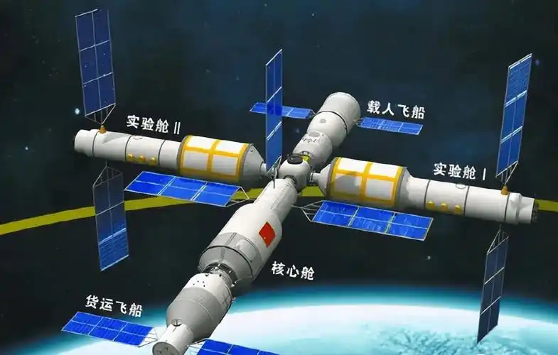
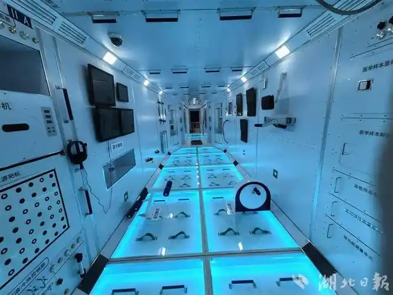
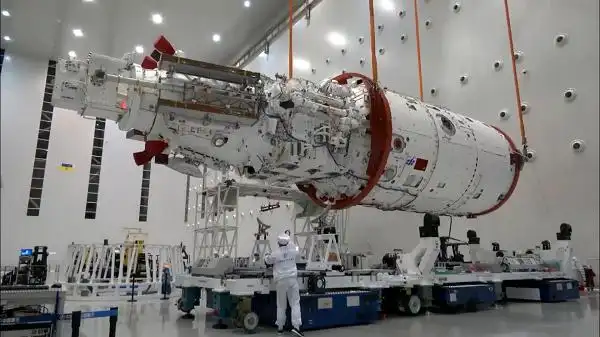
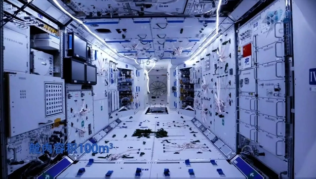

空间站建设

天宫一号
天宫一号是中国首个目标飞行器，于2011年成功发射。它为中国的空间站建设迈出了第一步，完成了交会对接等关键技术验证。

天和核心舱
天和核心舱是中国空间站的主舱段，提供生活和工作空间。于2021年发射，标志着中国空间站进入全面建造阶段。

问天实验舱
问天实验舱是空间站的重要组成部分，配备了实验设备和航天员支持系统，为科学研究提供了强大的支持。

梦天实验舱
梦天实验舱是中国空间站的另一重要模块，与问天舱协同工作，进一步增强了空间站的科研能力。
国际合作与未来展望
中国空间站不仅服务于中国，还将开放给国际科学家，为全球空间科学研究贡献力量。